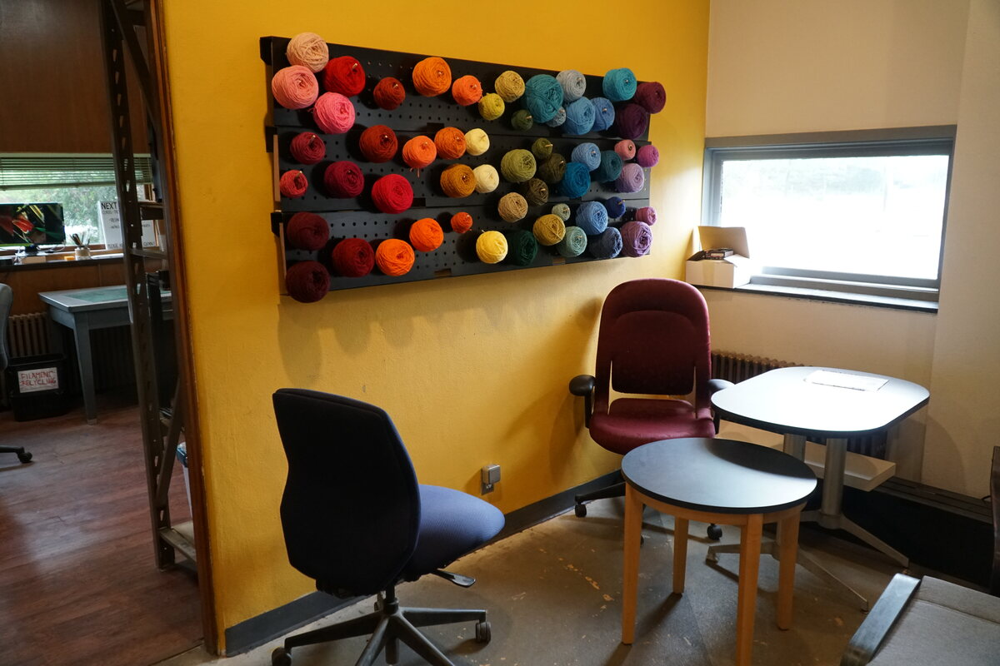

Twin Cities Maker: A Welcoming Minneapolis Makerspace for Makers of All Kinds
Twin Cities Maker is a non-profit, volunteer-driven community of artists, engineers, and makers. Together, we operate a shared community workshop where you can build nearly anything you can imagine.

A Makerspace for Makers of All Kinds
Whether you’re into woodworking, metalworking, or high-precision machining, we’ve got the tools, space, and equipment to help your projects come together. All of our members have 24/7 access to our workshop.